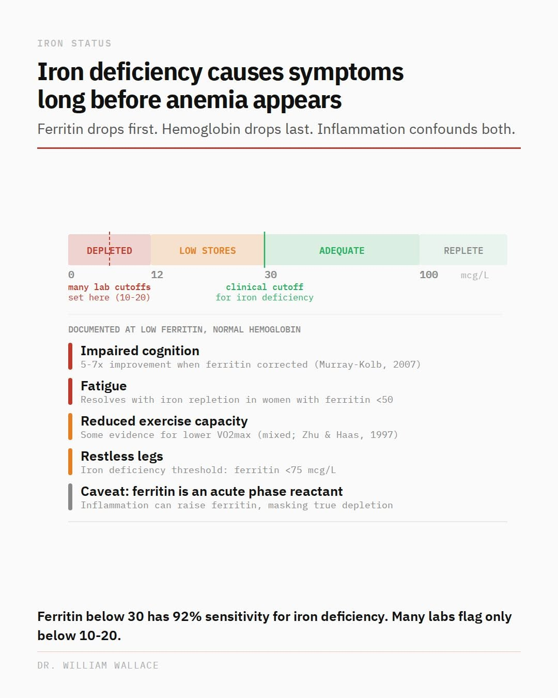

Questions about low ferritin keep coming up in the group.
Iron is a double-edge sword, when it comes to heart disease. High stored iron levels (ferritin) probably raise risk. But levels so low that they cause signs or symptoms of anemia or iron deficiency without anemia (IDWA) also raise risk. Either situation should be corrected. See this past post on the subject: ↪ Should you take iron for low-normal ferritin? Probably not without symptoms or a cause.
#ferritinHD #ironHD #anemiaHD #idwaHD
Iron deficiency is the most common mineral deficiency worldwide, and the most commonly missed version of it isn't anemia, it's iron deficiency without anemia (IDWA). IDWA is at least twice as prevalent as iron deficiency anemia, and it's frequently overlooked because the standard screening marker, hemoglobin, stays normal until stores are severely depleted.
Ferritin is the most sensitive and specific single marker for iron status. A level below 30 mcg/L has 92% sensitivity and 98% specificity for iron deficiency confirmed by bone marrow biopsy. Yet many clinical laboratories set their lower reference limit at 10-20 mcg/L, based on population distributions rather than clinical thresholds. This means a patient with a ferritin of 22 can be told their labs are normal while meeting the clinical definition of iron deficiency.
What happens in that gap matters. Murray-Kolb and Beard (2007) showed that in women of reproductive age, improvement in serum ferritin after iron supplementation was associated with a 5-7 fold improvement in cognitive performance accuracy — independent of hemoglobin changes. Fatigue resolves with iron repletion in women with ferritin below 50, even without anemia. Restless leg syndrome guidelines now use a ferritin threshold of 75 mcg/L, well above where most labs flag a problem.
The exercise capacity data is more mixed. Some studies show reduced VO2max in nonanemic iron-depleted individuals, but a large NHANES analysis found no significant difference after adjusting for covariates. The relationship likely depends on the severity and duration of depletion.
One important caveat for active individuals: ferritin is an acute phase reactant. It rises during inflammation, including exercise-induced inflammation. An athlete with chronic training stress can have a ferritin of 40-50 that looks adequate on paper while being functionally depleted. Transferrin saturation below 20% alongside ferritin can help clarify the picture in those cases.
Sources: Murray-Kolb & Beard, Am J Clin Nutr, 2007. Pasricha et al., Lancet, 2021. Guyatt et al., J Gen Intern Med, 1992. Zhu & Haas, Am J Clin Nutr, 1997. Allen et al., Clin J Am Soc Nephrol, 2010.
